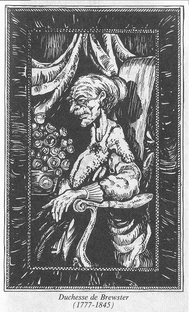

250
Vous vous approchez d'un portrait sous lequel figure la mention « Duchesse de Brewster, (1777-1845). »
Tournez la page...
Il représente une femme âgée d'aspect sévère, et au regard glacial ; une femme à n'en pas douter d'origine noble. Mais alors que vous le regardez, le portrait semble frémir. Vous clignez des yeux, et vous essayez de détourner votre regard. Impossible ! De légers frémissements agitent le visage peint et, bouche bée, vous voyez ses yeux se tourner vers vous. Ajoutez 1 point à votre total de PEUR. Ses lèvres remuent alors, et une voix vous déclare : « Étranger, sans le savoir, vous avez pénétré dans un endroit maudit, et j'aimerais pouvoir vous prier de vous en éloigner. Mais hélas ! vous ne pouvez vous échapper. Le mal et la douleur règnent en ces lieux que vous ne pourrez quitter que si vous les faites disparaître. Mais cela est presque impossible également. Je peux cependant vous révéler ceci : écoutez attentivement. Vous avez un allié dans cette Maison ; un allié qui peut vous aider. Il est vêtu d'une toge grise, et ensemble, vous pouvez libérer le Manoir de l'emprise du diable qui l'habite. » A ces mots, le frissonnement cesse. Vous vous frottez les yeux, puis vous regardez de nouveau le portrait, mais il a repris sa parfaite immobilité. Rendez-vous au 277 .